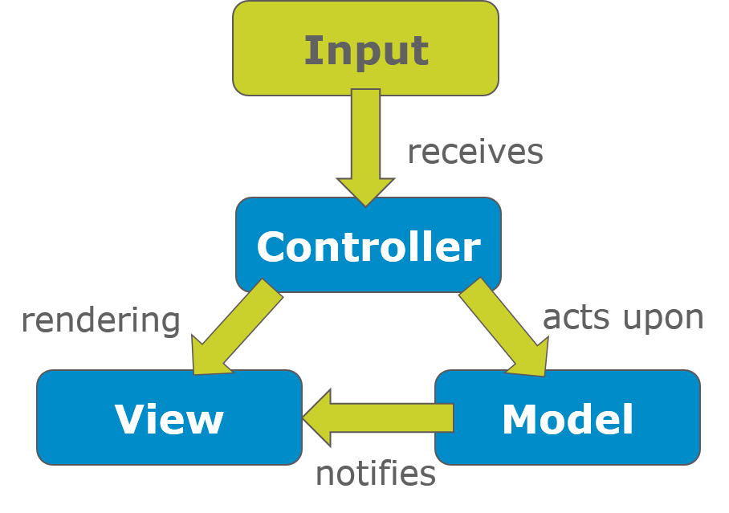

Webtechnology and Webprogramming
Model View Controller
labict.be
What is MVC ? [Gang of four]

- Model View Controller (MVC) is a software architecture pattern.
- It separates the representation of information from the user's interaction.
What is MVC ? [Gang of four]
- MVC consists of three kinds of objects.
- The Model is the application object.
- The View is its screen presentation.
- The Controller defines the way the user interface reacts to user input.
What is MVC ? [Gang of four]
- MVC decouples views and models by establishing a subscribe/notify protocol between them.
- A view must ensure that its appearance reflects the state of the model. Whenever the model's data changes, the model notifies views that depend on it.
- In response, each view gets an opportunity to update itself.
- This approach lets you attach multiple views to a model to provide different presentations. You can also create new views for a model without rewriting it.
Controller [Gang of four]
- Accepts user input
- Controller is a class consisting of methods (aka. actions) which map to a particular URL
- Translation of user input into objects which can be used by the business logic in the model
- Passes objects to the view to represent them to the user
- Does not contain business logic itself, rather it is a coordinator
View [Gang of four]
- A view is a representation of the model
- Data is passed by the controller to the view, which renders the necessary HTML
- Templates assist in rendering the required HTML
- Some MVC frameworks use a view engine to generate custom templates
Model [Gang of four]
- Classes which are used to store (persistence) and manipulate state.
- Business logic is included in the model as these typically operate on the data, which the models represent (OO encapsulation)
- ORM systems can be used to provide persistence and the most important MVC frameworks have an ORM included or provide a binding.
MVC vs. 3-tier
- Typically 3-tier consists of a "thin" client, "fat business" logic and a data base layer.

MVC vs. 3-tier
- MVC promotes the use of "thin" controllers, pushing business logic to the model.
- Views should strive to contain mostly HTML
- Controllers should limit their actions as much as possible
- Models should contain the persistence of data and all logic except for view-related logic (markup, representation) and user input
MVC frameworks
Properties
- Web template system / view engine
- Caching
- Security
- Authentication, authorization, Cross-Site Scripting libraries, Cross-Site Request Forgery prevention mechanisms
- ORM (Object Relational Mapping)
- Scaffolding
- Extensive code generation to create, read, update and delete database entries (for instance combined with an ORM)
MVC frameworks
Properties
- Ajax
- Support for Ajax in the form of client-side templates
- Web services
- Through the uniform interface
- Easy to change the representation from HTML to XML or JSON
- Unit testing
- Integrated unit testing frameworks
- Dependency Injection
- Mocking frameworks
MVC frameworks
Examples of Server Side MVC frameworks
- PHP
- CodeIgniter
- CakePHP
- Yii
- FuelPHP
- Ruby on Rails
- ASP .NET
MVC frameworks
Examples of Client Side MVC frameworks
- JavaScript
- AngularJS
- Backbone.js
- Ember.js
- ...